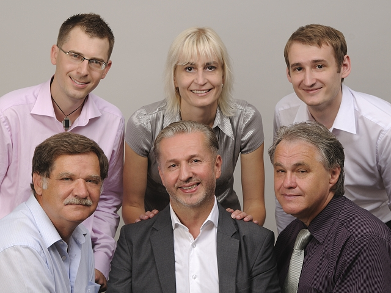

Republikový výbor Strany svobodných občanů (Svobodní) schválil na svém sobotním jednání kandidátní listinu Svobodných v Chrudimi pro podzimní komunální volby. Lídrem kandidátky je zastupitel a technicko-ekonomický pracovník Petr Lichtenberg, dvojkou politolog a žurnalista Josef Káles, trojkou podnikatel Josef Lebduška a čtyřkou druhý zastupitel zvolený za Svobodné v minulém volebním období Luděk Vlk.
Průměrný věk sedmadvacetičlenné kandidátní listiny činí 46 let, je na ni 16 mužů a 11 žen, nejčastějším povoláním je živnostník, kterých je na kandidátce celkem 8. Mezi kandidáty naleznete například i bývalého starostu Chrudimi Jiřího Nového nebo učitelku Jaroslavu Beránkovou.
„Být lídrem kandidátní listiny je zodpovědný úkol a převzít tuto pomyslnou štafetu po zesnulém Eduardu Beránkovi je velký závazek. Jsem však odhodlaný hájit program Svobodných i pro následující volební období,“ sdělil lídr Svobodných pro podzimní komunální volby Petr Lichtenberg. Mezi programové priority Svobodných patří radnice bez dluhů, opravená a čistá veřejná prostranství a bezpečnost. Jednou z hlavních zásad je také město, které nepodniká, nekonkuruje a nepřekáží podnikatelům.
Svobodné vedl do komunálních voleb v roce 2010 bývalý ředitel gymnázia Eduard Beránek. V minulých volbách získali téměř 8 % hlasů a dva mandáty. Byli krátce součástí radniční koalice, z které odešli kvůli rostoucímu dluhu města, což bylo v rozporu s koaličním prohlášením městské rady.